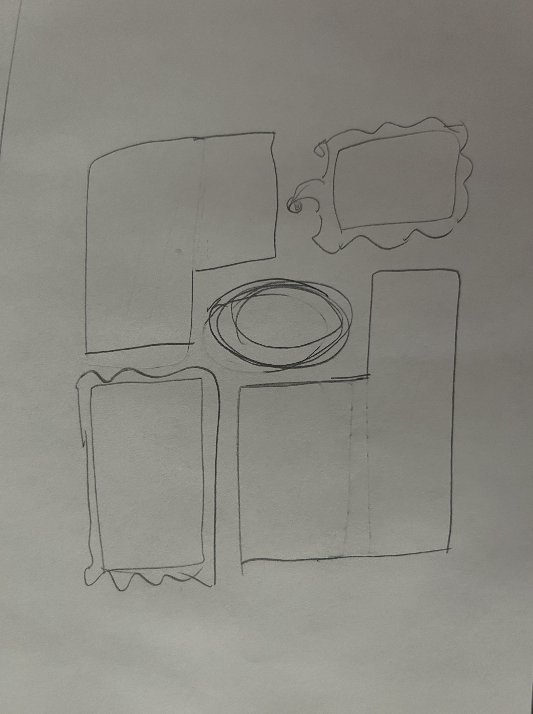

Purpose and Audience
The purpose of this website will be to display and sell artwork for my wife's business. The target audience will vary from piece to piece but generally will be those who enjoy independent art and this particular art style.
Description of the dynamic elements
Each nav link should be highlighted when hovering over. The logo should be animated. The "picture frame" images will cycle through different artwork when hovered over. The child page will generate artwork images and metadata based on search criteria.
Colors and Fonts
Font-family: Helvetica, Arial, sans-serif Colors: #e984bf, #e984bf, #f3af6f, #f8665b, #fff
Content
“The most important of the Lord’s work that you will ever do will be the work you do within the walls of your own home.” —President Harold B. Lee, Teachings of Presidents of the Church: Harold B. Lee (2000), 134
The hobbies I always cycle through are: writing, art, and music. My loving husband, two beautiful boys and I are now living in Frisco, Texas. I am a member of the Church of Jesus Christ of Latter-Day Saints and I am passionate about the home being a center of learning and safety. I love talking about empowering mothers because of their profound affect on the next generation. Home is where change begins. Let’s have discussions on how we can make the home a better place for you and your family!
Logo
(Pictured above)
Wireframes
Home

Child
